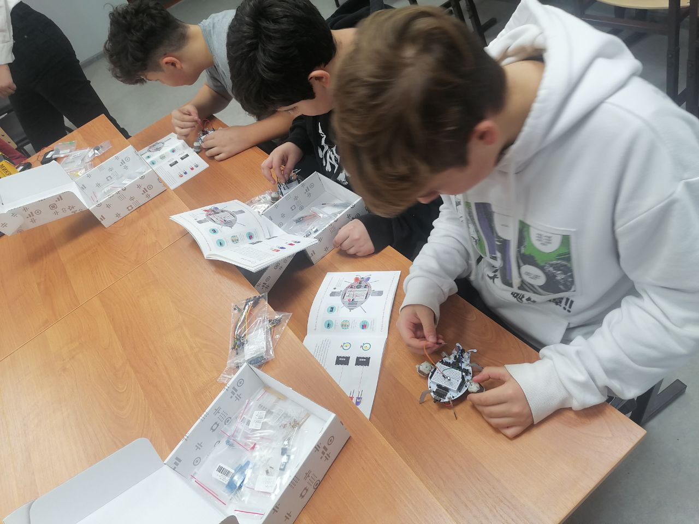

Дата проведения: 25.10.2022 г. 16:00
25.октября 2022 г. в детском мини-технопарке «Квантум» СП «ЦВР» ГБОУ СОШ № 17 г. Сызрани прошло мероприятие «Изучение основ схемотехники на примере сборки электронного конструктора «Робожук». В ходе данного занятия ребята познакомились с основными структурными элементами электронного конструктора «Робожук». Получили навыки сборки микросхем, а также провели эксперимент «Зажигаем светодиод»